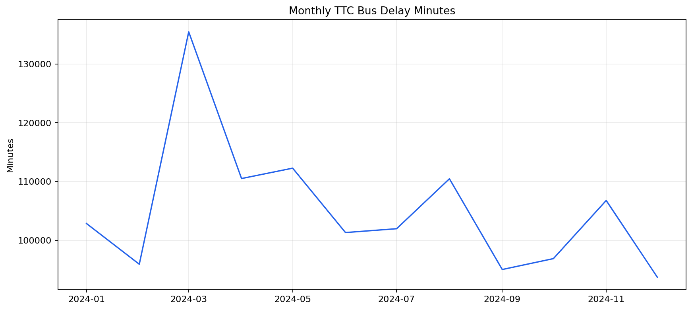
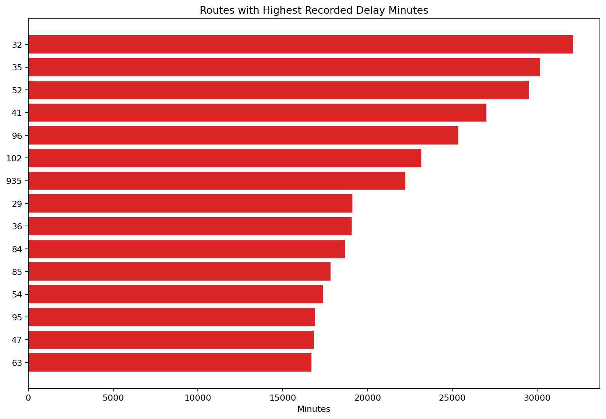
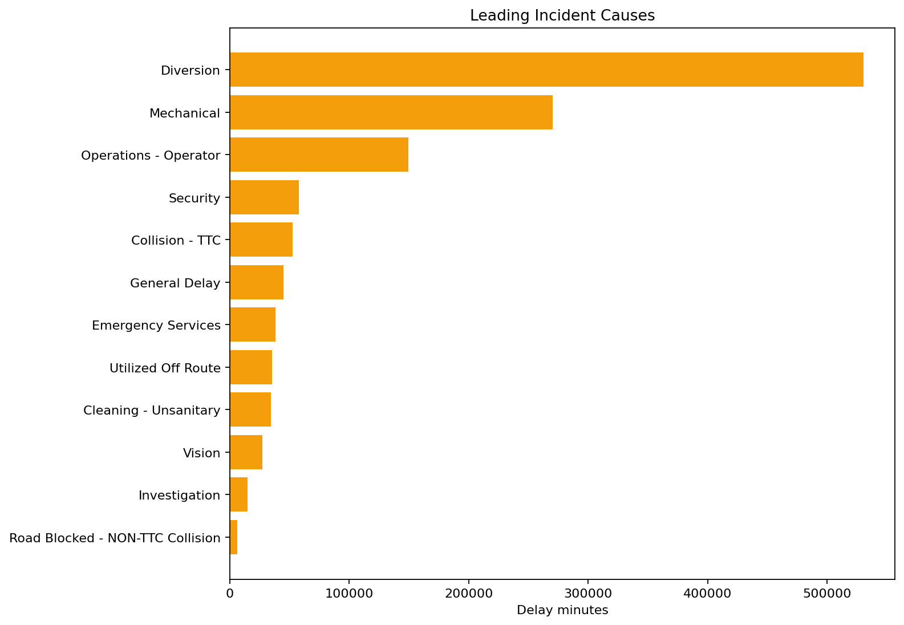

TTC Bus Delay Reliability
Author: Mohammed Adeen Shaik
Review date: 11 October 2026
Research question
Which routes and incident categories contribute most recorded delay minutes?
Data and provenance
Toronto Open Data TTC bus delay workbook for 2024.
Source materials are linked from the repository README. Input fingerprints are recorded in the evidence manifest so a reader can identify the exact committed artifacts used in this review.
Method and analytical rationale
Source sheets are normalized into an event table. Invalid dates and negative delay or gap minutes are excluded. Scorecards distinguish frequency, severity and total recorded delay.
Findings and interpretation
Fresh execution on 11 October 2026 using the 2024 workbook only. After the pipeline eligibility filters, 59,021 events remain, totaling 1,263,332 recorded vehicle-delay minutes. The leading incident category by minutes is Diversion. The values measure recorded incidents, not passenger minutes or delay per scheduled trip.
| Measure | Value |
|---|---|
| events | 59021 |
| recorded delay minutes | 1263332.0000 |
| source window | 2024 |
Limitations
Recorded vehicle delay minutes are not passenger time lost. Without service frequency or ridership denominators, high totals do not prove that a route is intrinsically less reliable.
Reproduction
Use the setup commands and input contract in the repository README. Open the notebook catalogue for annotated code and saved outputs. Keep raw records and model binaries local; public reports contain aggregate results or source-embedded figures.
Final visual results

Figure from key_visuals.ipynb, original code cell 3.

Figure from key_visuals.ipynb, original code cell 4.

Figure from key_visuals.ipynb, original code cell 5.